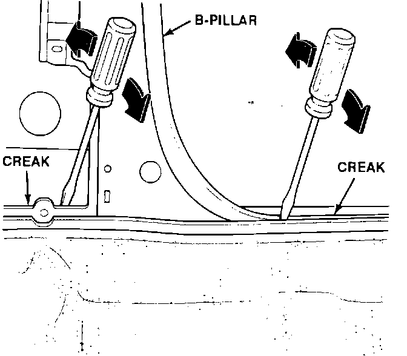

B-Pillar Base Creaks
B-PILLARSymptom:
Creaking from the base of the B-pillar.
Probable Cause:
Sheet metal friction near a spot weld.
Affected Vehicles:
1991 Legend Coupe
Corrective Action:
Spread the sheet metal to apply pressure to the spot weld.
1. Raise and lower the car at the jack points with a floor jack to confirm that the base of the B-pillar is the source of the noise.

2. If the noise is coming from near the junction of the door sill and the B-pillar, remove the door sill molding and the quarter trim panel. See section 20 of the service manual.
3. Insert a flat-blade screwdriver between the layers of sheet metal next to the noisy spot welds. Spread the sheet metal slightly.
4. Raise and lower the car. If the creak is still heard, repeat step 3 until the creak is eliminated.
5. Reinstall the door sill molding and the quarter trim panel.
WARRANTY INFORMATION:
Operation number: 857310
Flat rate time: 1.2 hours
Failed P/N: 64620-SP1-300ZZ
Defect code: 042
Contention code: B07